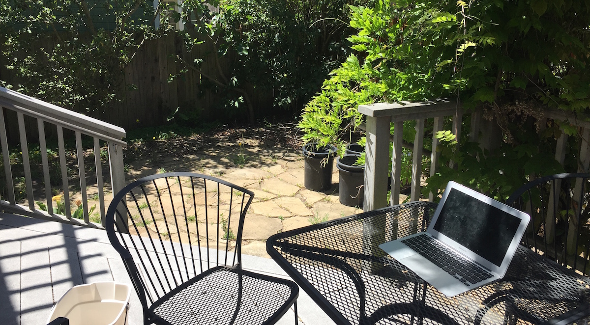

Ben Gibbons
Software Engineer Graphic Designer Volunteer Lead

Work Experience
Volunteering
Coding Projects
Resume
Art Gallery
Contact
40% nerd
20% artist
20% fitness nut
20% big brother
100% Heart
This is the mobile version of this site